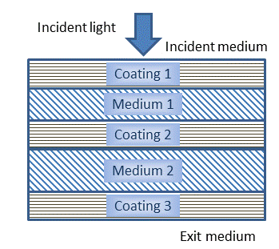

Stack Database
Stack Database
Navigation: OptiLayer Menu Commands > Data Menu >
Stack Database
` <design_inhom_inter.html>`__ ` <idh_menu_data.html>`__ ` <stack_editor.html>`__
A stack consists of multiple thick layers of media, each potentially having optional coatings at their boundaries. The thickness of each layer is sufficient to treat reflections of light as non-coherent. Each layer can be either parallel, where all reflections are considered, or wedged, where reflected light diverges from the optical path of the system and is thus disregarded.

Media and coatings in a stack are numbered in the direction of light propagation, as shown in the schematic above.
When creating a stack, media are selected from the Substrate database, and coatings are chosen from the Design database located in the same Problem directory.
After modifications to the stack using Refinement or Needle optimization procedures, for example, the modified coatings and stack are stored together in the Stack database. If necessary, modified coatings can be reset to their initial state or saved as standalone designs in the Design database. Similarly, modified stacks can be saved to the Stack Database. For further details, see the sections on Saving Current Targets and other data topics.